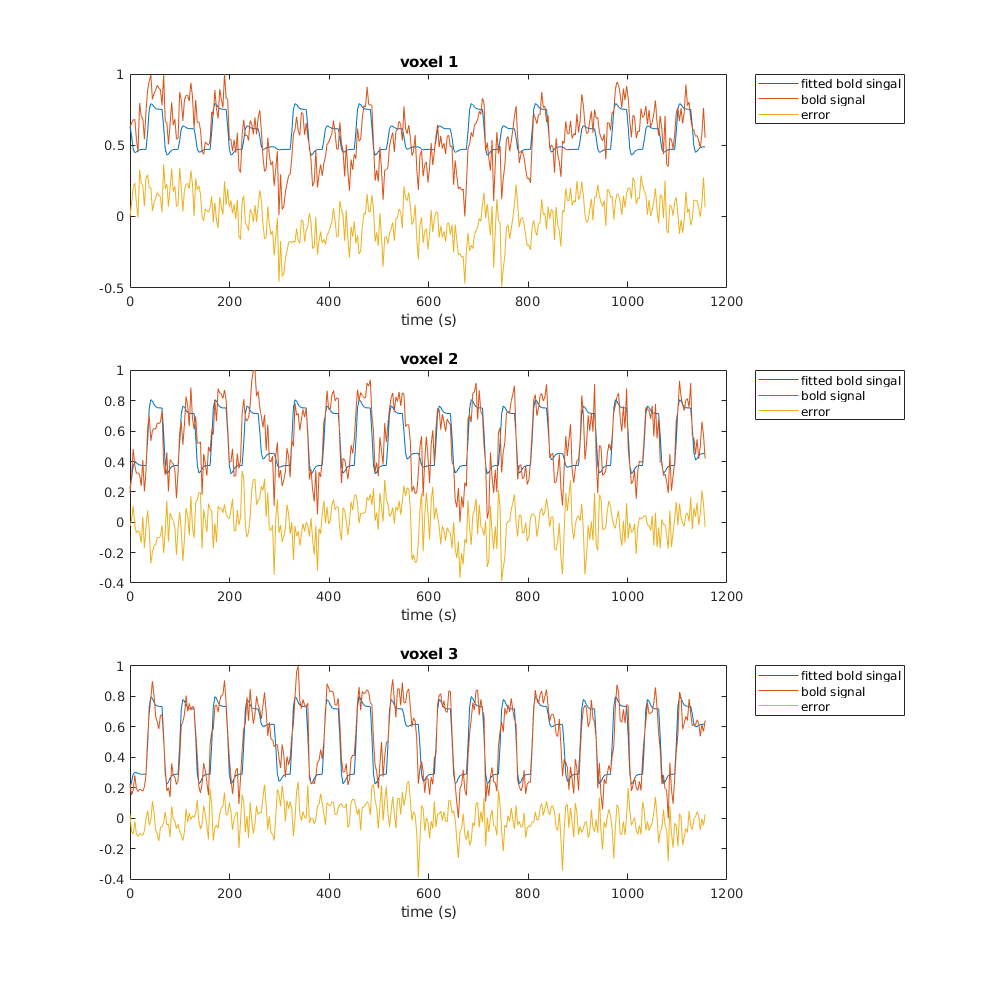

6.6
Contents
6.6A
load('exercise_fMRI_small.mat');
6.6B
6.6B - a)
s1 = zeros(1,50); s1(25) = 1;
6.6B - b)
c1 = conv(s1, hrf);
6.6B - c)
c1t = 0:3.22: 3.22*(length(c1)-1); s1t = 0:3.22: 3.22*(length(s1)-1); plot(c1t, c1, 'DisplayName', 'Convolution Signal', 'LineWidth', 1); hold on; plot(s1t, s1, 'DisplayName', 'Stimulus Presentation', 'LineWidth', 1 ); legend xlabel('time (s)'); xlim([50 125]); ylabel('amplitude');

6.6B - d)
the new graph isn't as smooth and doesn't reach as high as the one in 6.2B, probably the result of convolution with a different HRF vector
6.6B - e)
the signal spike happens about 6.5 seconds after the stimulus, and it is returned to baseline level at 109.48 seconds, about 29 seconds after its onset
6.6C
6.6C - a)
nrscans = length(bold); D = []; conditions = ["fix", "stat", "att", "natt"]; for condition = conditions con_idx = eval(condition); condition_stimuli = zeros(nrscans, 1); % make a zeros vector condition_stimuli(con_idx) = 1; % populate zeros vector with index of stimulus presentation D = [D condition_stimuli]; end
6.6C - b)
time = 0:3.22: 3.22*(length(bold) -1); subplot(4,2,2:2:8); imagesc(D); colormap gray; title('Design Matrix'); actual_time = 3.22 * size(D,1); ytick = 1 : 200/3.22 : actual_time; yticklabels = 0 : 200 : 200 * ceil( actual_time /200); set(gca, 'YTick', ytick, 'YTickLabel', yticklabels); set(gca, 'XTick', [1 2 3 4], 'XTickLabel', conditions); ylabel('time (s)'); xlabel('Regression'); idx = 1; for i=1:2:7 subplot(4,2,i); area(time, D(:,idx)); ylim([-0.1 1.1]); xlim([0 time(end)]); title(strcat("condition ", conditions(idx))); xlabel('time (s)'); ylabel('presentation'); set(gca, 'YTick', [0, 1], 'YTickLabel', ["hidden", "shown"]); idx = idx + 1; end subplot(4,2,3); set(gcf,'position',[10,10,800,1000]); shg;

6.6C - c)
condition:
- fix : 16 times
- stat : 4 times
- att : 8 times
- natt : 8 times
fixed order:
- there is a fix (fixation point probably) between every stimulus except before stat
- in the first half it goes [att-natt-att-natt-stat] x2
- in the second half it goes [natt-att-natt-att-stat] x2
each stimulus was presented for about 10 scans, each scan takes 3.22 seconds which means each stimulus presentation lasted about 32.2 seconds
6.6C - d)
DHRF = conv2(hrf, D);
6.6C - e) - CODE
clf; subplot(4,2,2:2:8); imagesc(DHRF); colormap gray; actual_duration_HRF = 3.22 * size(DHRF,1); ytick = 1 : 200/3.22 : actual_duration_HRF; yticklabels = 0 : 200 : 200 * ceil( actual_duration_HRF /200); set(gca, 'YTick', ytick, 'YTickLabel', yticklabels); set(gca, 'XTick', [1 2 3 4], 'XTickLabel', conditions); title('Design Matrix HRF'); ylabel('time (s)'); xlabel('Regression'); time_HRF = 0:3.22: 3.22*(length(DHRF) -1); idx = 1; for i=1:2:7 subplot(4,2,i); plot(time_HRF, DHRF(:,idx)); xlim([0 time_HRF(end)]); title(strcat("HRF condition ", conditions(idx))); xlabel('time (s)'); ylabel('activation'); idx = idx + 1; end set(gcf,'position',[10,10,800,1000])
6.6C - e) - ANSWER
there is a difference between the two design matrices, because the convolution with HRF introduced a few more values that appear as black in the graph. They are the inhibitory part of the response, so it has negative values which are interpreted as a 0, or black in the graph.
6.6C - f)
DHRF = [ones(size(DHRF,1), 1) DHRF];
6.6D
6.6D - a) - CODE
clf; for i=1:3 subplot(3,1,i) plot(time, bold(:,i), 'DisplayName', strcat("BOLD Voxel ", num2str(i))); xlim([0 time(end)]); xlabel('time (s)'); ylabel('amplitude'); title(strcat("Conditions + Response of BOLD Voxel ", num2str(i))); hold on; for condition=1:4 area(time, D(:,condition), 'FaceAlpha', 0.3, 'EdgeAlpha', 0, 'DisplayName', strcat("condition ", conditions(condition))); legend("Location", "northeastoutside"); end set(gcf,'position',[10,10,1000,1000]) end
6.6D - a) - ANSWER
- condition fix - all voxels exhibit decrease in excitation during condition fix but voxel 1's amplitude doesn't decrease that much, while voxel 2 and 3 drop really low
- condition natt - voxel 2 and 3 get more excited in response to natt
- condition stat - all voxels exhibit decrease in excitation during condition stat but voxel 3's amplitude doesn't decrease that much, while voxel 1 experiences a moderate drop and voxel 2 - a steep drop
- condition att - all 3 voxels get excited during presentation of condition att
6.6D - B
XD = DHRF(1:360,:); betas = []; for vox=1:3 betas = [betas regress(bold(:, vox), XD)]; end
6.6D - C
fitted_bold = XD*betas; error = bold - fitted_bold;
6.6D - D
clf; % clear leftover plots for vox=1:3 subplot(3,1,vox); plot(time, fitted_bold(:,vox), "DisplayName", "fitted bold singal"); hold on; plot(time, bold(:,vox), "DisplayName", "bold signal"); plot(time, error(:,vox), "DisplayName", "error"); title(strcat("voxel ", num2str(vox))); xlabel("time (s)"); legend("Location", "northeastoutside"); end set(gcf,'position',[10,10,1000,1000])
6.6D - E - Code
sSqErr = []; for vox=1:3 sSqErr = [sSqErr sum(error(:,vox).^2)]; end disp(sSqErr);
8.6371 6.0223 3.4187
6.6D - E - Answer
The 3rd voxel has the smallest sum of squared errors therefore its regression model is the best
6.6E
6.6E - A - Code
clf; condition_betas = betas(2:5,:).'; bar(condition_betas); legend(conditions, "Location", "southeast"); ylabel('coefficient size'); title('regression coefficients'); set(gca, 'XTick', [1 2 3], 'XTickLabel', ["Voxel 1","Voxel 2","Voxel 3"] );
6.6E - A - Answer
- Voxel 1's activation is explained mostly by att
- Voxel 2's activation is explained mostly by att and natt
- Voxel 3's activation is explained mostly by att, natt and stat
6.6E - B code
statfix = zeros(1,4); statfix( conditions == "stat") = 1; statfix( conditions == "fix") = -1; nattstat = zeros(1,4); nattstat( conditions == "natt") = 1; nattstat( conditions == "stat") = -1; attnatt = zeros(1,4); attnatt( conditions == "att") = 1; attnatt( conditions == "natt") = -1; contrasts_idx = [ statfix; nattstat; attnatt].'; contrasts = condition_betas*contrasts_idx; subplot(1,2,1); bar(contrasts); set(gca, 'XTick', [1 2 3], 'XTickLabel', ["Voxel 1","Voxel 2","Voxel 3"] ); legend(["stat-fix", "natt-stat", "att-natt"], "Location", "northwest"); title('Grouped by voxel'); subplot(1,2,2); contrastst= contrasts.'; bar(contrastst); set(gca, 'XTick', [1 2 3], 'XTickLabel', ["stat-fix", "natt-stat", "att-natt"] ); legend(["Voxel 1","Voxel 2","Voxel 3"]); title('Grouped by contrast'); set(gcf,'position',[10,10,1000,500])

6.6E - B answer
these results indicate the contrast (difference/amplitude) in activity with respect to a condition and its opposite. The higher the contrast the more it is likely that the voxel's activity is coded for that type of contrast
- Voxel 1 (from primary visual cortex) is most sensitive to attention vs no attention).
- Voxel 2 (from MT) is most sensitive to motion vs no motion (which iirc makes sense given past research into that area showing neurons there code for specific motion direction).
- Voxel 3 (from IPS) is most sensitive to abesence vs presence of a stimulus.